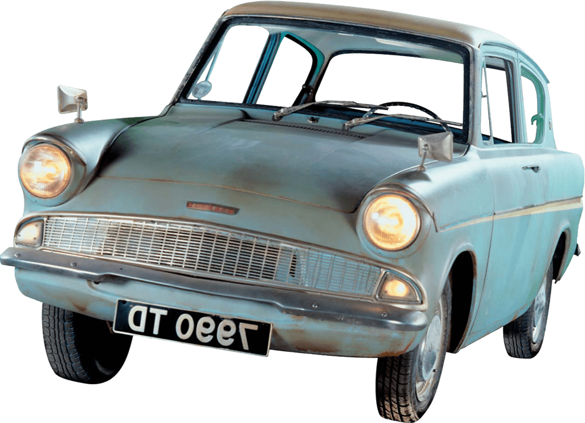
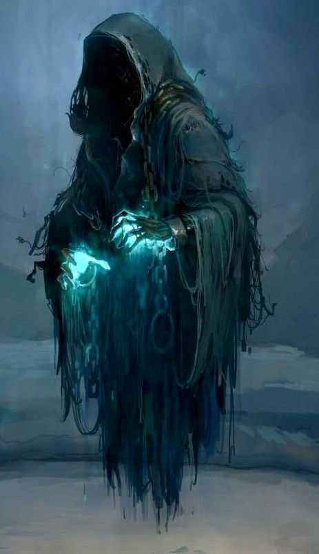
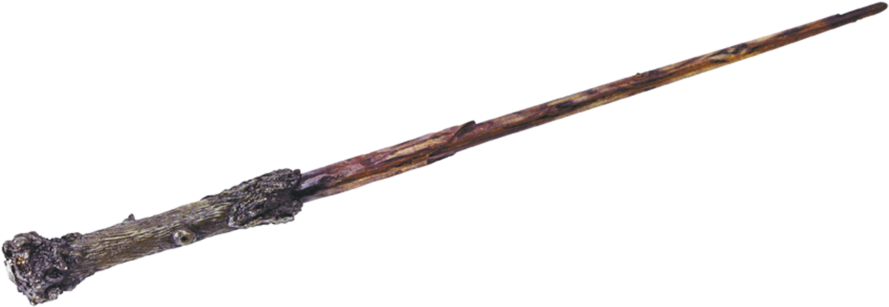
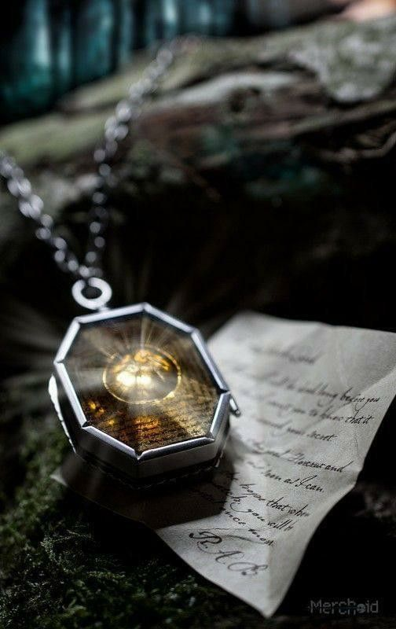
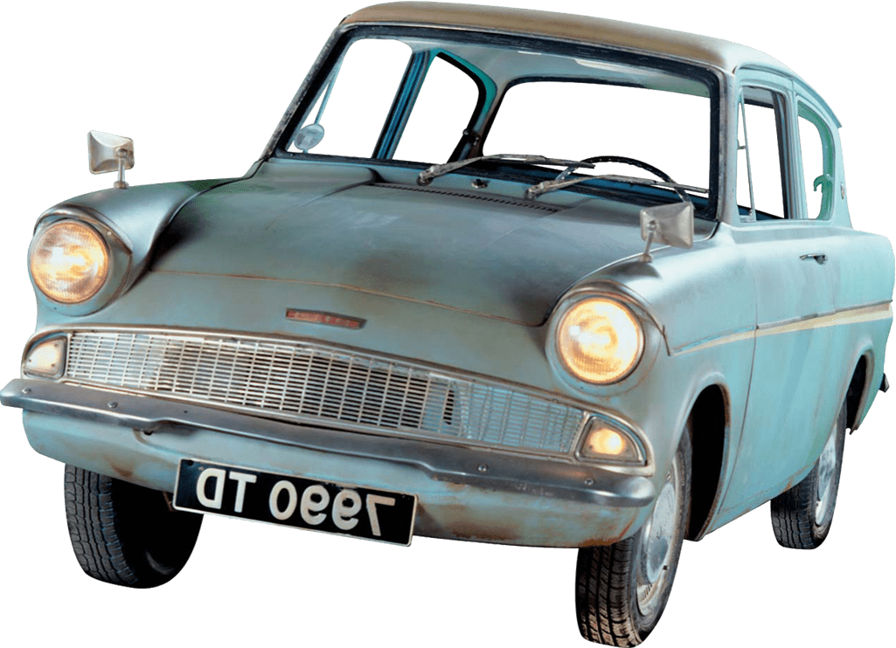
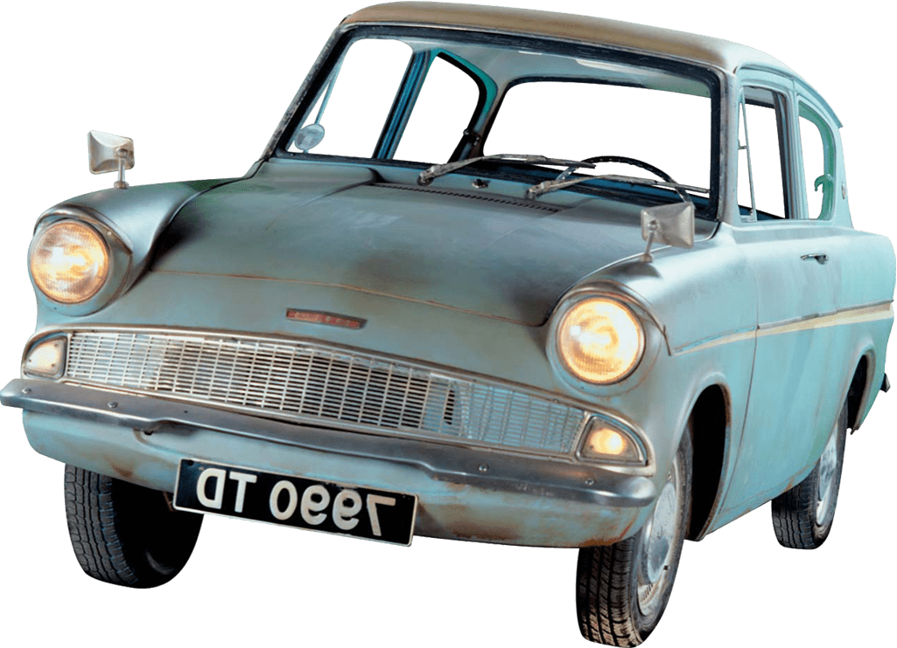

It is a story about Harry Potter, an orphan brought up by his aunt and uncle because his parents were killed when he was a baby.
Harry is unloved by his uncle and aunt but everything changes when he is invited to join Hogwarts School of Witchcraft and Wizardry and he finds out he's a wizard.
At Hogwarts Harry realises he's special and his adventures begin when he and his new friends Ron and Hermione attempt to unravel the mystery of the Philosopher's Stone.
Harry Potter and the Chamber of Secrets
Harry Potter is about to start his second year at Hogwarts. Harry expects it to be a normal year after his experiences the term before but
a secret chamber opens, muggle-born students are attacked and Harry must put his life in danger once more.
The three main characters in the story are Harry Potter – a young wizard who finds out he can speak Parselmouth (talk to snakes) and is mistaken for the heir of Slytherin;
Ron Weasley – Harry’s best friend who steals his Father’s flying car to fly himself and Harry to Hogwarts; and Hermione Granger – Harry’s other best friend who is the smartest
student in their year at school but who is petrified when the attacks start. The new Defence against the Dark Arts teacher is Gilderoy Lockhart who is a self-obsessed lunatic of a teacher.

Harry Potter and the Prisoner of Azkaban
The famous wizard, Harry Potter, is back for another year at Hogwarts, School for Witchcraft and Wizardry.
Harry is delighted when he gets on the Hogwarts Express for the second time, as the summer has been very unenjoyable due to the Dursleys being the only relatives of his left.
When Harry sees the school after what seems like ages, he sees hooded figures standing outside. Dementors – they guard Azkaban, the most feared wizard prison, and suck all of the happiness out of you.
Harry finds out why the Dementors are guarding Hogwarts. They are guarding it because they don't want Sirius Black (a prisoner who escaped Azkaban) to break into Hogwarts.
When Harry finds out that Sirius was his parents secret-keeper, he thinks that Sirius is helping the wizard that tried to kill Harry. Voldemort.
Whose side does Harry turn to when he finds out the truth, and finds out who Sirius really is?
Harry Potter and the Goblet of Fire
Harry's (Daniel Radcliffe's) fourth summer and the following year at Hogwarts are marked by the Quidditch World Cup and the Triwizard Tournament,
in which student representatives from three different wizarding schools compete in a series of increasingly challenging contests. However, Voldemort's (Ralph Fiennes') Death Eaters are
gaining strength and even creating the Dark Mark giving evidence that the Dark Lord is ready to rise again. In the unsuspecting lives of the young wizard and witches at Hogwarts,
the competitors are selected by the Goblet of Fire, which this year makes a very surprising announcement: Hogwarts will have two representatives in the tournament, including Harry Potter.
Will Harry be able to rise to the challenge for the Triwizard Tournament while keeping up with school or will the challenges along with Voldemort's rebirth be too much for the young hero?
Harry Potter and the Order of the Phoenix
Harry, Ron and Hermione are due to start their 5th year at Hogwarts School of Witchcraft and Wizardry. Harry is desperate to learn the secrets that Ron and
Hermione have known all summer and why they have been so secretive. But as a new change of staff occurs at Hogwarts, the school is about to be turned upside down.

Harry Potter and the Half-Blood Prince
During Harry Potter's sixth year at Hogwarts, he finds a book that once belonged to the mysterious Half-Blood Prince that earns him the respect of his new Potions professor Horace Slughorn.
Dumbledore must prepare Harry for the ultimate final confrontation by finding out the secret behind Voldemort's power. Meanwhile, a hidden enemy waits in the shadows to carry
out a mission given to him by the Dark Lord.


Harry Potter and the Deathly Hallows
As Harry, Ron and Hermione race against time and evil to destroy the Horcruxes, they uncover the existence of the three most powerful objects in the wizarding world: the Deathly Hallows.
While villainous Lord Voldemort begins taking over the Ministry of Magic, Harry, Ron and Hermione must race against time to finish Dumbledore's quest to find and destroy Voldemort's
Horcruxes in order to stop the Dark Lord once and for all. On their own out in the world, the trio must rely upon one another as evil forces threaten to tear them apart. Will they
succeed? Will Voldemort finally be stopped? What is the mystery behind the Deathly Hallows?

 
